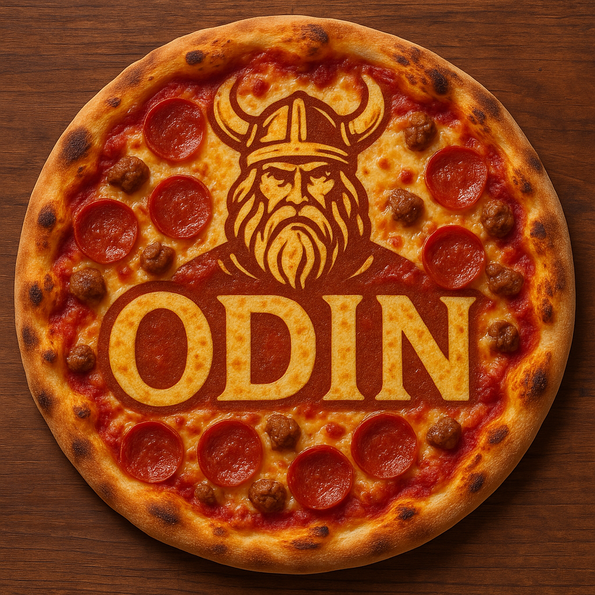

Odins Pizza

Make this amazing, tantalizing, cheesiest pizza you've ever tasted!
Ingredients needed
- Pizza dough
- Pizza sauce
- Mozzarella cheese
- Onion
- Anchovies
- Cherry tomatoes
- Bread crumbs
- Olive oil
- Basil
Cooking steps
- Shape the dough. Sprinkle a kitchen surface with flour and roll out the pizza dough on the counter to fit the pan. Transfer it to the greased baking sheet. Brush olive oil around the crust and in the center of the dough.
- Coat the bread crumbs. In a small bowl, combine the bread crumbs with 1 tablespoon of olive oil.
- Assemble. Spread the tomato sauce, followed by half the cheese, onion, anchovies, and cherry tomatoes. Add the remaining cheese, followed by the breadcrumbs.
- Bake. Bake for 20-25 minutes or until golden brown. Tear up basil over the top and serve.